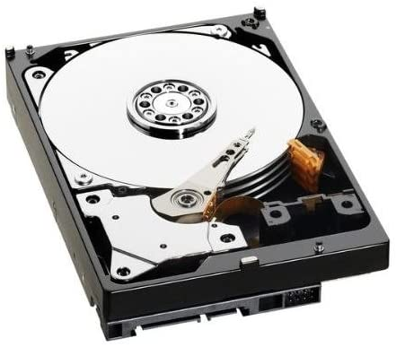

Don't let this happen to you!
Sadly, this is going to start a little like a horror story.
In 2006, my friend, Violet, was doing a Masters Degree in Art at Bradford. She’d gone away from her student flat for a fortnight and came back to find she’d left her computer on all that time.
And during that uptime, something had gone wrong with her hard drive. It had died!
The heart-breaking thing was that drive contained six months of project work, and she’d not thought to back up for most of that. She tried places to retrieve the content, but nothing. It really was lost!
It sadly caused her a mental health incident, and she ended up dropping out of university over it.
As someone who loved her, it was difficult to witness.
Sadly, every few months, I’ll hear a writer in a similar dilemma. The process of writing any book is time intensive. Typically, each book is a year’s worth of effort, so it’s not easily replaced.
Here are some top tips to ensure you don’t find yourself in this desperate place
Upgrade your laptop if you have a hard drive to a solid-state drive
The hard disk drive - sadly very fragile
If you have an older style laptop with a hard drive, please really consider upgrading to a new machine of spending to upgrade.
Old hard drives used to have magnetic disk, and the slightest drop would be enough to shatter (I learned the hard way).
New solid-state drives are so much more robust and with no moving parts, less to wear out. And did I mention they're faster too?
If you’re not sure which one you have and aren’t very tech savvy, here’s an easy way. Turn on your machine and listen. If you hear a whole series of rapid clicks that comes from the arm of the hard disk reader, and it’s likely you have a hard disk drive. Consider upgrading!
Back up onto a flash drive weekly>
Flash! Ah? It saves everyone of us...
A relatively simple method, just copy over your files onto a removable flash drive
PROS: It’s cheap and simple.
CONS: It's only as good as when you remember to do it! Plus, I bet you’ll end up misplacing it. Consider labelling it.
To the cloud
Oh heavenly cloud!
I know a lot of authors who are hesitant about saving their work to the cloud. Ten years ago, people would claim that if it’s in the cloud, then everyone owns it.
This is utter bull****.
A cloud service is a great way to not only access your work anywhere (I have sometimes added chapters on a phone on the train) but they’re relatively secure if you choose a good password. Many also include some form of second factor authentication for true security.
I recommend Google Cloud or Microsoft OneDrive.
If you host your work inside these, it’ll keep updates and backups on your work as you go. Very little can go wrong. [Although I do not recommend deleting your work and not realising. Even then, you usually have about a week to retrieve it]
I typically work on drafts in Google Docs and edit in Microsoft OneDrive which makes me double backed up.
And the best thing is that most document drafts aren't particularly large in size. So you'll probably get away with using a free entry for your storage!
PROS: If your document lives on a cloud drive, it'll automatically update your backup as you go. As long as you have internet.
CONS: Just don't delete your original, okay? That could be bad. Consider making a backup weekly to another cloud service.
Backing up can be simple. And a true sanity saver.
Do it for Violet.
My friend, Violet, who was a huge influence on Melody Harper's Moon